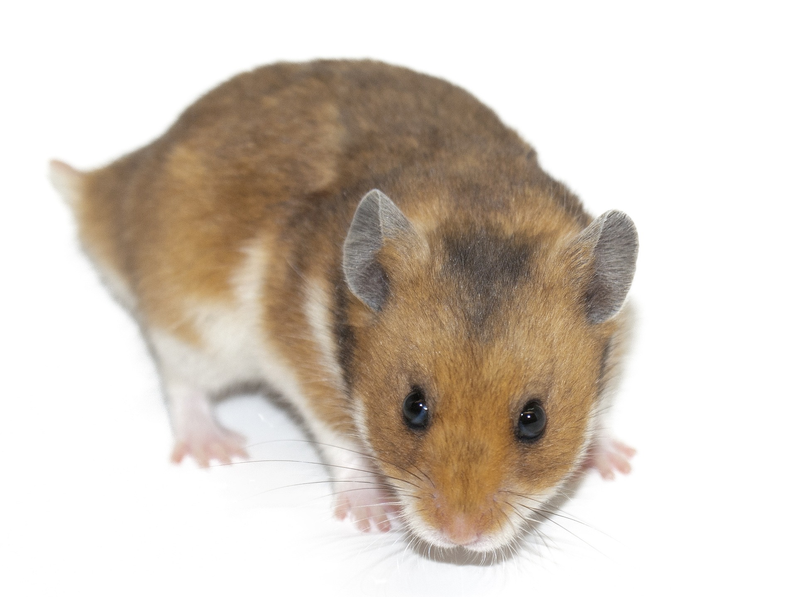
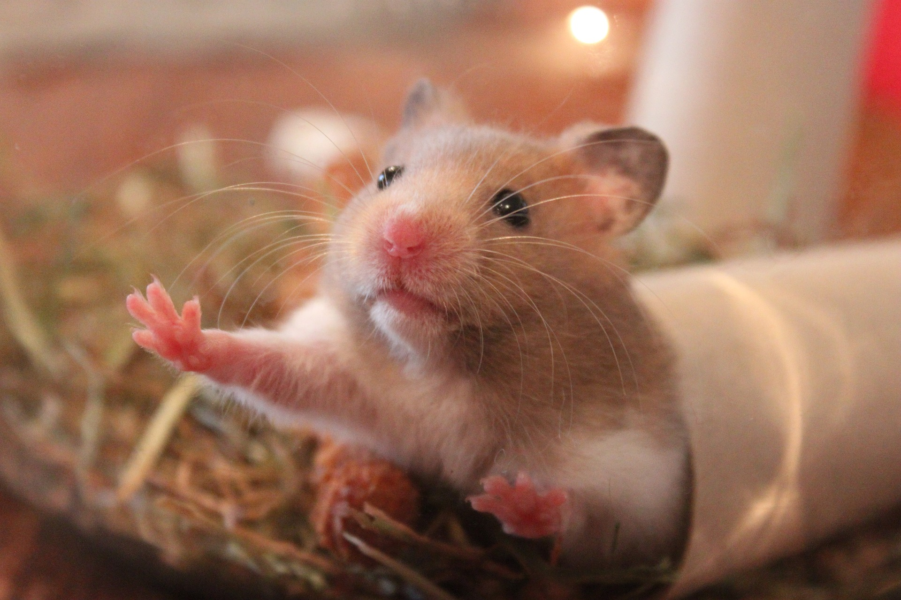

Hamsters
중가리아
로보로브스키
골든
시리아햄스터 또는 골든햄스터(영어: Mesocricetus Auratus)
는 햄스터 중에서 가장 잘 알려진 종이다. 현재 야생개체는 멸종위기를 맞고 있다. 하지만 시리아햄스터는 인기를 누리는 애완동물이자 널리 쓰이는 실험동물이기도 하다. 몸길이는 보통 12.5에서 17.5 센티미터이며, 몸무게는 보통 120g에서 170g 정도이다. 수명은 2년에서 3년 정도이다.

